SOURCE MOTION PT
USER ACCEPTANCE TESTING GUIDE
Step-by-Step Software Testing Instructions
Before you begin: Every login, patient, and appointment used in this guide is
synthetic test data created specifically for testing — nothing here is a real
person. Never enter real patient information, real passwords, or real payment details while
following this guide. If you're testing against your own staging environment and don't yet have
test accounts, ask your administrator to run the same setup described in Section 2.
1. Quick Start — How to Begin Testing
HOW TO START TESTING
- Open Google Chrome (or Microsoft Edge).
- Go to:
http://127.0.0.1:5173/ (or your organization's test/staging URL)
- Enter:
Username:
Password:
- Click: SIGN IN
- You should see: the Source Motion PT Home Page for your role.
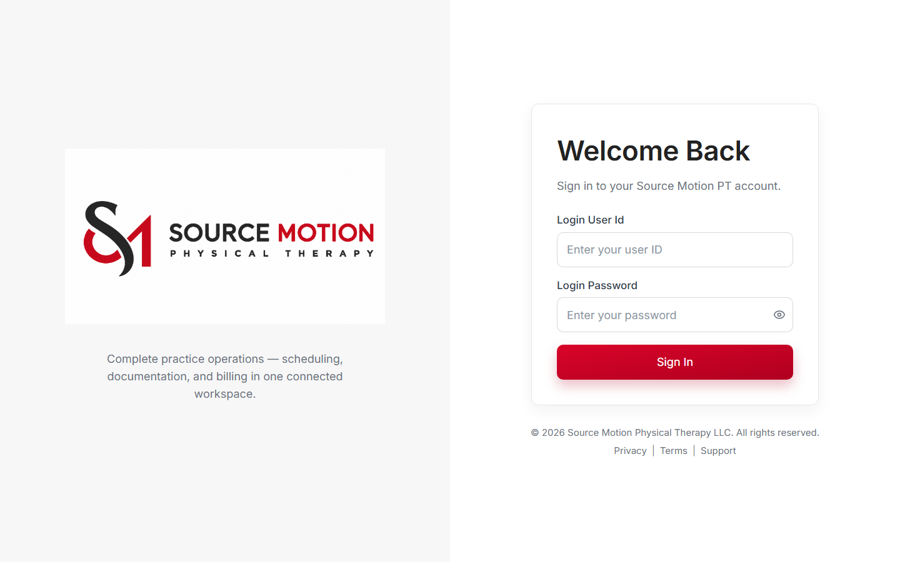
The sign-in screen you should see before logging in.
PASSFAIL
2. Test Accounts (Synthetic — Never Real Credentials)
THESE ARE TEST ACCOUNTS ONLY. Every account below was created by a script
(manage.py create_uat_test_data) specifically for testing, using a
@uat.test email domain that does not receive real mail. They carry no real patient
data. Do not reuse this password anywhere else, and do not create accounts like this against a
real production database with real patients.
TEST ACCOUNT ONLY
| Role | Username | Password | What this account tests |
|---|
| Super Admin | superadmin.uat@uat.test | Uat-Test-Pw-88214! | Clients, platform users, system administration |
| Organization Admin | admin.uat@uat.test | Clinic administration, reports, settings |
| Physical Therapist (PT) | pt.uat@uat.test | Patients and clinical documentation |
| PTA | pta.uat@uat.test | Treatment documentation |
| Front Desk / Scheduler | frontdesk.uat@uat.test | Patients and scheduling |
| Biller | billing.uat@uat.test | Billing |
| Patient | patient.uat@uat.test | Patient portal |
All seven accounts belong to a dedicated test organization called "UAT Test Clinic",
which also has one test patient ("Uat Testpatient"), a test location, a test appointment type, one
scheduled test appointment, and one Mobile Care test request already set up — so every screen below
has something real to look at instead of an empty page.
If these accounts don't exist yet in your environment, ask a developer to run:
python manage.py create_uat_test_data — it's safe to run more than once and will not
touch any real client or patient data.
3. Module Inventory
This is the complete list of screens found in the application at the time this guide was written,
based on inspecting the actual running software and its source code — not assumptions. "Screenshot
in this guide" means a real, live screenshot appears later in this document for that screen. A
"No" doesn't mean the screen is broken — it means this version of the guide doesn't yet walk through
it step by step; the screen still exists and works.
| Module | Route | Who Can Access | Screenshot in this guide |
|---|
| Login | / | Everyone | Yes |
| Home / Dashboard | #dashboard | All staff roles (role-specific view) | Yes |
| Patients | #patients | Admin, Director, Scheduler, Therapist, PTA, Compliance | Yes |
| Scheduling | #schedule | Admin, Director, Scheduler, Therapist, PTA | Yes |
| Documentation | #documentation | Admin, Director, Therapist, PTA | Yes |
| Mobile Care (dashboard, requests, offers, availability, service area) | #mobile-care | Admin, Director, Scheduler, Therapist, PTA | Yes (dashboard) |
| Billing (charges, claims, payments, statements, packages, superbills) | inside a patient's chart → Operations | Admin, Director, Biller (Scheduler: view + collect only) | Yes |
| Users (staff management) | #users | Admin (own org) / Super Admin (any org) | Yes |
| Clinic Settings (locations, appointment types, payers, prices, Mobile Care settings) | #clinic-settings | Admin only | Yes |
| Reports | #reports | Admin only | Yes |
| Safety & Audit | #safety | Admin, Director, Compliance | Yes |
| Client Management | #clients | Super Admin only | Yes |
| Platform Administration Hub | #admin-hub | Super Admin only | Yes |
| Credential Dashboard (license tracking) | #credentials | Super Admin only | Yes |
| Mobile Care Platform Defaults | #mobile-care-platform-defaults | Super Admin only | No |
| Provider Availability (Mobile Care) | inside Mobile Care tab | Admin, Director, the provider themselves | No |
| Provider Service Area (Mobile Care) | inside Clinic Settings / Mobile Care tab | Admin | No |
| Provider Matching & Offers (Mobile Care) | inside Mobile Care tab | Admin, Director, Therapist, PTA | No |
| Patient Portal — Home | Portal → Home | Patient | Yes |
| Patient Portal — My Appointments | Portal → My Appointments | Patient | Yes |
| Patient Portal — Book a Visit | Portal → Book a Visit | Patient | No |
| Patient Portal — In-Home PT | Portal → In-Home PT | Patient | Yes |
| Patient Portal — Forms | Portal → Forms | Patient | No |
| Patient Portal — Documents | Portal → Documents | Patient | No |
| Patient Portal — My Exercises | Portal → My Exercises | Patient | No |
| Patient Portal — Outcome Measures | Portal → Outcome Measures | Patient | No |
| Patient Portal — Messages | Portal → Messages | Patient | No |
| Patient Portal — Payments | Portal → Payments | Patient | No |
| Patient Portal — Waitlist | Portal → Waitlist | Patient | No |
| Patient Portal — Profile | Portal → Profile | Patient | Yes |
| Notifications (in-app/email/SMS) | cross-cutting, not a dedicated screen | All, per event | No |
| Session security / logout | any page → Logout | Everyone | Yes |
Section 1 — Login & Getting Started
TEST 1.1 — SIGN IN AS ORGANIZATION ADMIN
Who should test: Anyone
START HERE:
- Go to the test URL.
- Type
admin.uat@uat.test into the User Id box.
- Type
Uat-Test-Pw-88214! into the Password box.
- Click Sign In.
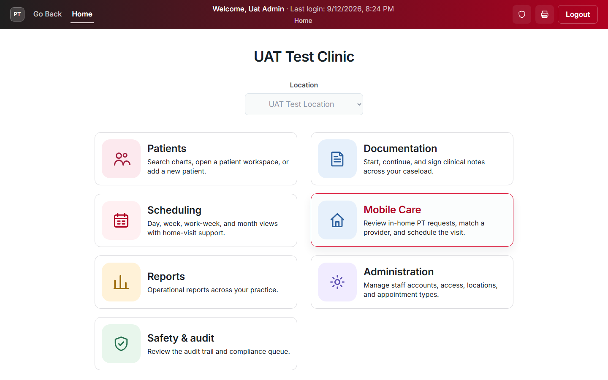
The Admin's home screen after a successful sign-in.
Expected resultYou should see the "UAT Test Clinic" home page with tiles for Patients, Documentation, Scheduling, Mobile Care, Reports, Administration, and Safety & audit.
PASSFAIL
If it failed, what happened?
TEST 1.2 — WRONG PASSWORD IS REJECTED
Who should test: Anyone
START HERE:
- Sign out if you're signed in.
- Type
admin.uat@uat.test into the User Id box.
- Type any wrong password on purpose.
- Click Sign In.
Expected resultA message says the username or password is wrong. You are NOT let into the app.
PASSFAIL
If it failed, what happened?
Section 2 — Patients
TEST 2.1 — VIEW THE PATIENTS LIST
Who should test: Admin, Front Desk, or Therapist
START HERE:
- Log in as Admin (or Front Desk).
- From the Home page, click Patients.
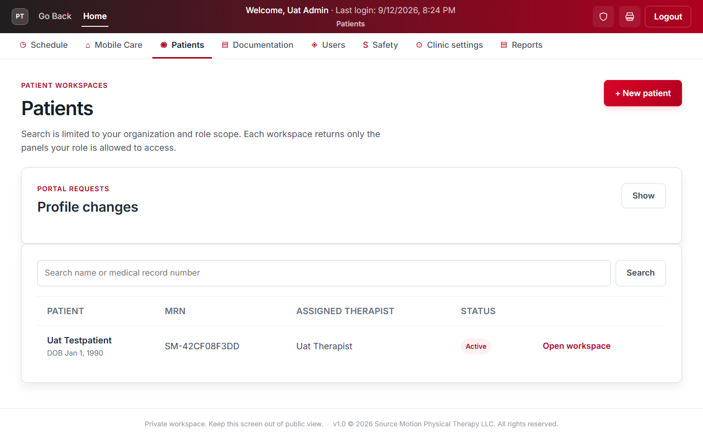
The Patients list, showing the synthetic test patient "Uat Testpatient."
Expected resultA list of patients appears, including "Uat Testpatient." A search box and a "+ New patient" button are visible.
PASSFAIL
If it failed, what happened?
TEST 2.2 — ADD A NEW PATIENT
Who should test: Front Desk or Admin
START HERE:
- From the Patients screen, click + New patient.
- Enter:
First Name: Test
Last Name: Patient
Date of Birth: 01/01/1990
Email: testpatient@example.com
Phone: 919-555-0100
- Click Save (or Create patient).
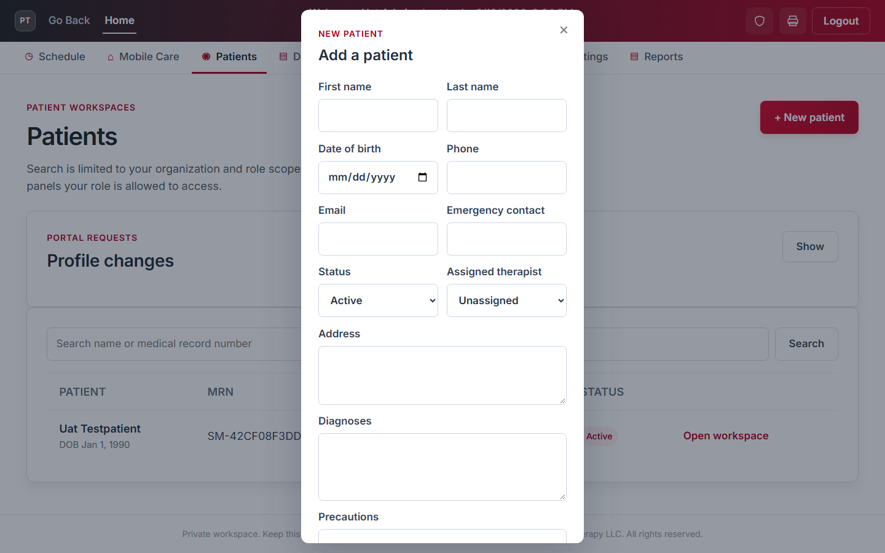
The Add a Patient form.
Expected resultA message confirms the patient was created. The new patient appears in the Patient list.
PASSFAIL
If it failed, what happened?
Section 3 — Scheduling
TEST 3.1 — VIEW THE SCHEDULING CALENDAR
Who should test: Admin, Front Desk, or Therapist
START HERE:
- From the Home page, click Scheduling.
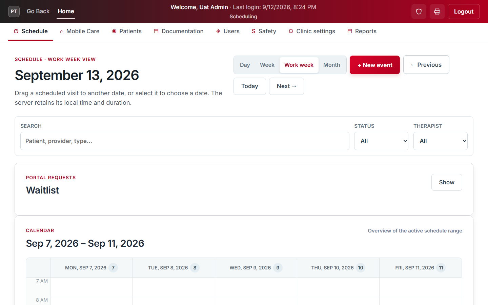
The Scheduling calendar, showing the test appointment for tomorrow.
Expected resultA calendar appears with Day/Week/Work week/Month view buttons and a "+ New event" button.
PASSFAIL
If it failed, what happened?
TEST 3.2 — START BOOKING A NEW APPOINTMENT
Who should test: Admin, Front Desk, or Therapist
START HERE:
- From the Scheduling screen, click + New event.
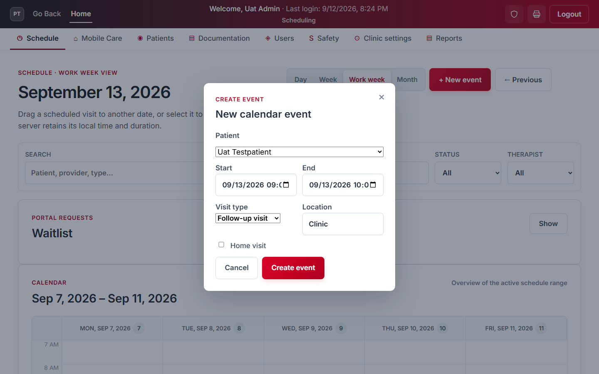
The New calendar event form.
Expected resultA form appears asking for Patient, Start/End time, Visit type, and Location.
PASSFAIL
If it failed, what happened?
Section 4 — Clinical Documentation
TEST 4.1 — VIEW THE DOCUMENTATION INBOX
Who should test: Admin, Director, Therapist, or PTA
START HERE:
- From the Home page, click Documentation.
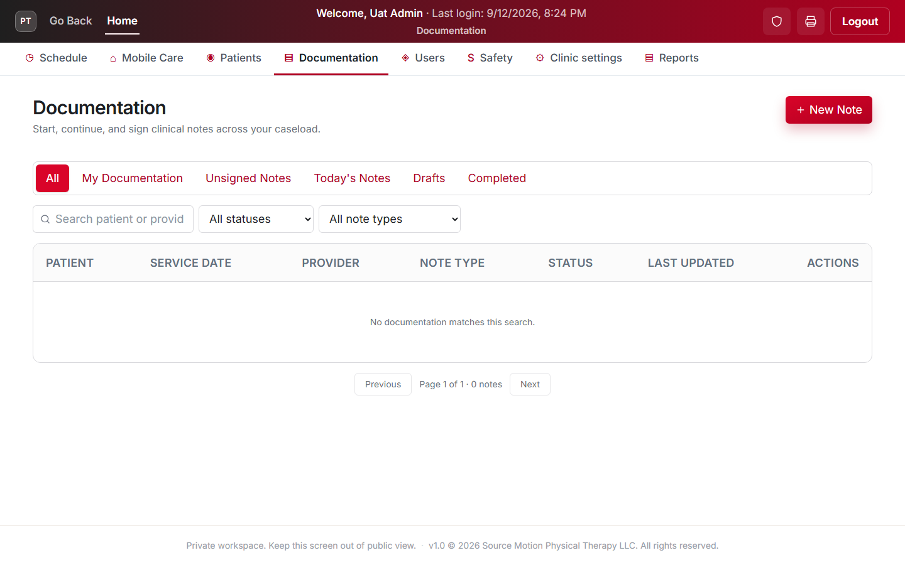
The Documentation inbox.
Expected resultA list of clinical notes appears (it may be empty for a brand-new test clinic) with filter tabs (All, My Documentation, Unsigned Notes, ...) and a "+ New Note" button.
PASSFAIL
If it failed, what happened?
TEST 4.2 — START A NEW CLINICAL NOTE (AS THERAPIST)
Who should test: Physical Therapist or PTA
START HERE:
- Log out, then log in as
pt.uat@uat.test.
- Click Documentation, then click + New Note.
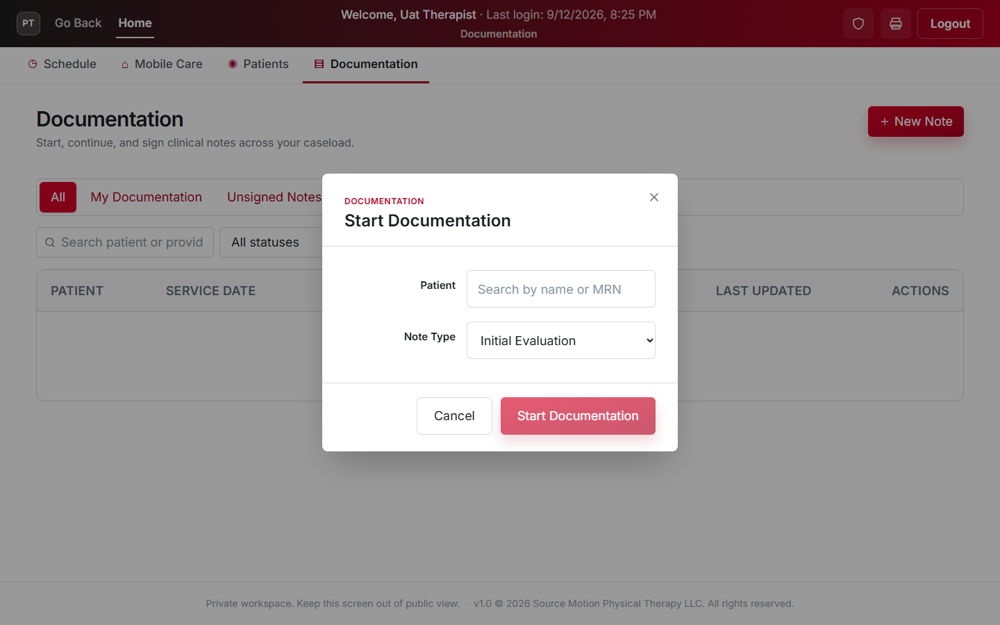
The Start Documentation dialog.
Expected resultA dialog appears asking you to search for a Patient and choose a Note Type (e.g. Initial Evaluation).
PASSFAIL
If it failed, what happened?
Section 5 — Mobile Care (In-Home PT)
TEST 5.1 — VIEW THE MOBILE CARE DASHBOARD
Who should test: Admin, Director, Front Desk, Therapist, or PTA
START HERE:
- Log in as Admin.
- From the Home page, click Mobile Care.
The Mobile Care Home tab, showing the one synthetic test request.
Expected resultYou should see cards for Today's home visits, Pending requests, Provider offers, Active care episodes, Visits needing assignment, and License/provider issues — with "Pending requests" showing at least 1, and "Uat Testpatient" listed under Pending service requests.
PASSFAIL
If it failed, what happened?
TEST 5.2 — THERAPIST'S OWN MOBILE CARE VIEW
Who should test: Physical Therapist
START HERE:
- Log in as
pt.uat@uat.test.
- Click Mobile Care.
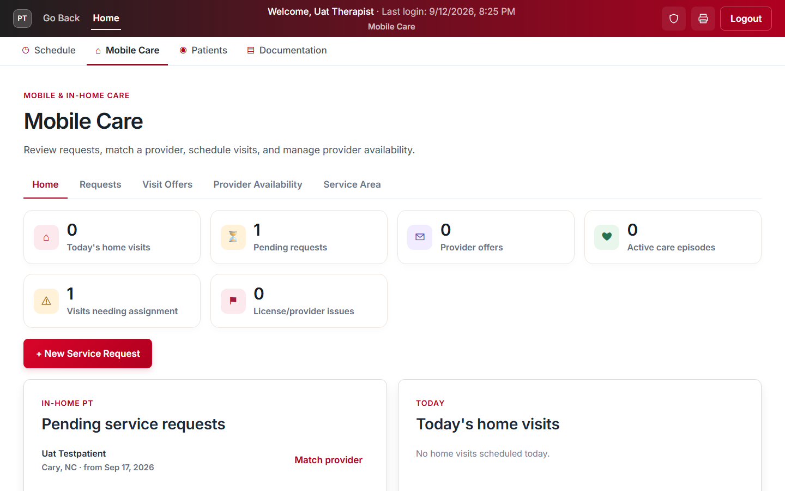
A Therapist's own, narrower Mobile Care view.
Expected resultThe same Mobile Care screen appears, but "Today's home visits" and "Provider offers" are scoped to this therapist only, not the whole clinic.
PASSFAIL
If it failed, what happened?
Section 6 — Billing
TEST 6.1 — OPEN A PATIENT'S BILLING INFORMATION
Who should test: Biller or Admin
START HERE:
- Log in as
billing.uat@uat.test.
- Click Patients, then click on Uat Testpatient to open their chart.
- Look for the Operations / Billing area of the chart.
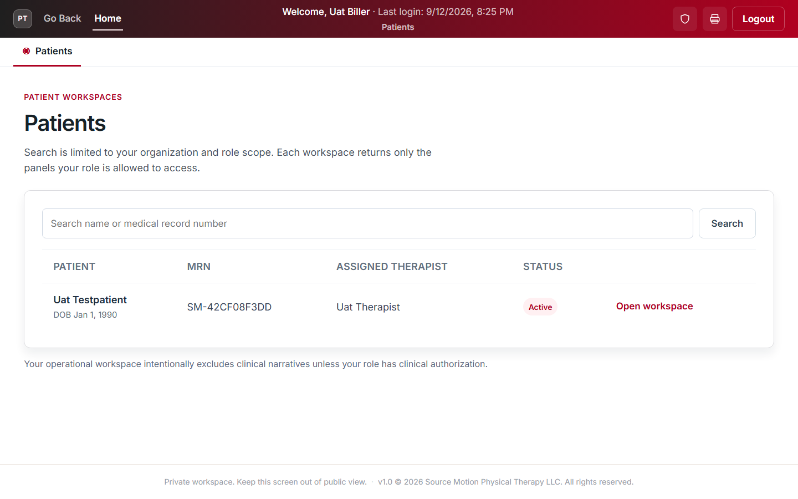
A Biller's view of a patient's chart, opened to the billing-relevant area.
Expected resultYou should be able to see (and, depending on your role, add) charges, claims, payments, and statements for this patient — but you should NOT see any clinical notes or diagnoses.
PASSFAIL
If it failed, what happened?
Section 7 — Administration
TEST 7.1 — VIEW STAFF USERS LIST
Who should test: Admin
START HERE:
- Log in as Admin.
- Click Administration, then Users.
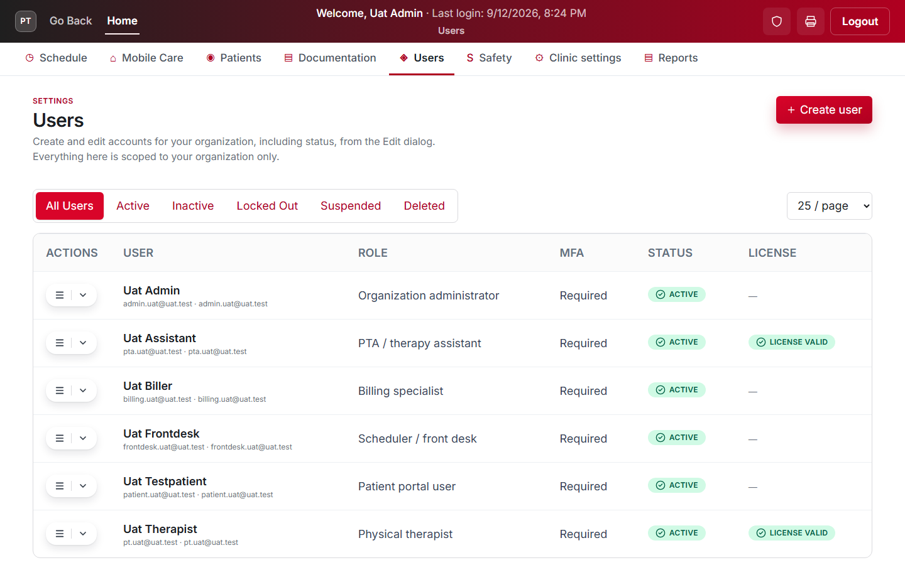
The staff Users list for UAT Test Clinic.
Expected resultA list of every staff member in this clinic appears, showing name, role, and status.
PASSFAIL
If it failed, what happened?
TEST 7.2 — VIEW CLINIC SETTINGS
Who should test: Admin
START HERE:
- Click Clinic settings.
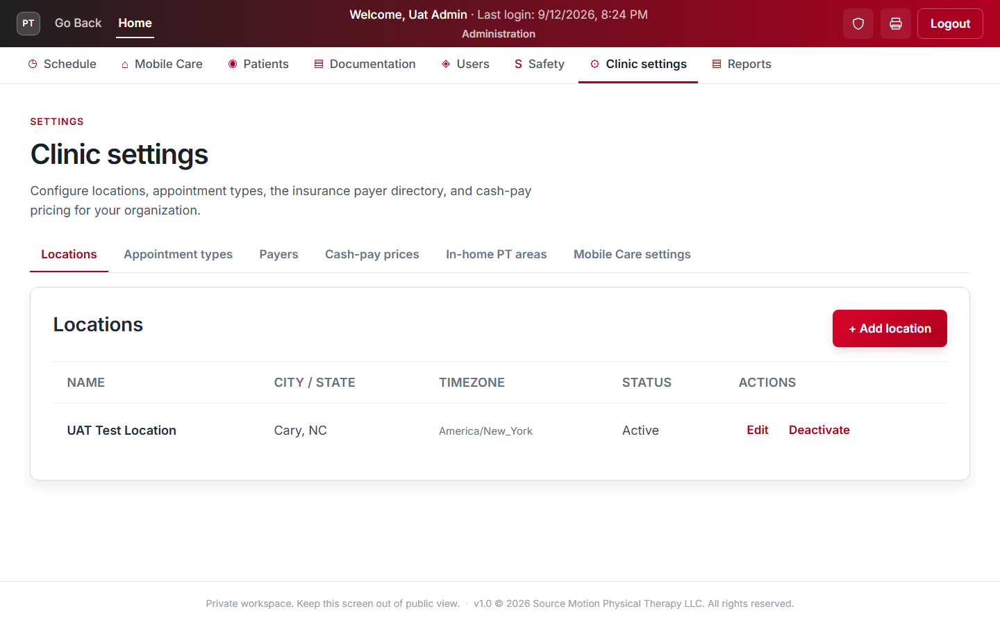
Clinic Settings — Locations tab.
Expected resultTabs appear for Locations, Appointment types, Payers, Cash-pay prices, In-home PT areas, and Mobile Care settings.
PASSFAIL
If it failed, what happened?
Section 8 — Reports
TEST 8.1 — VIEW REPORTS
Who should test: Admin only
START HERE:
- Log in as Admin.
- Click Reports.
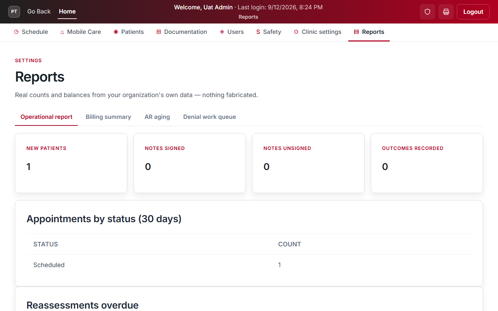
The Reports page — Operational report tab.
Expected resultTabs appear for Operational report, Billing summary, AR aging, and Denial work queue, each with numbers and tables.
PASSFAIL
If it failed, what happened?
Also try logging in as a Therapist or Front Desk user and confirm "Reports" is not visible anywhere in their menu — Reports is Admin-only.
Section 9 — Safety & Audit
TEST 9.1 — VIEW SAFETY & AUDIT
Who should test: Admin, Director, or Compliance
START HERE:
- Log in as Admin.
- Click Safety & audit.
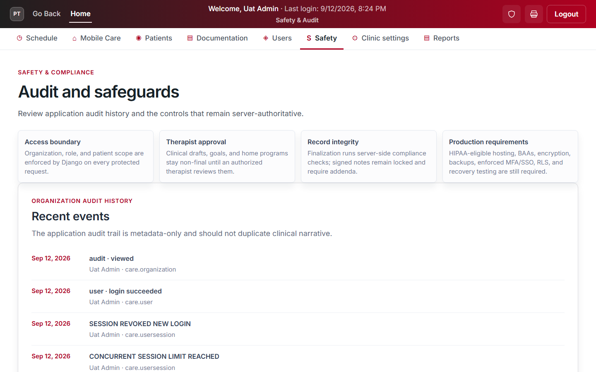
The Safety & Audit page.
Expected resultA page appears describing the compliance queue and audit trail for this organization.
PASSFAIL
If it failed, what happened?
Section 10 — Other Staff Roles
These quick checks confirm each remaining role can log in and lands on a sensible home screen for their job.
TEST 10.1 — PTA HOME SCREEN
Who should test: PTA
START HERE:
- Log in as
pta.uat@uat.test.
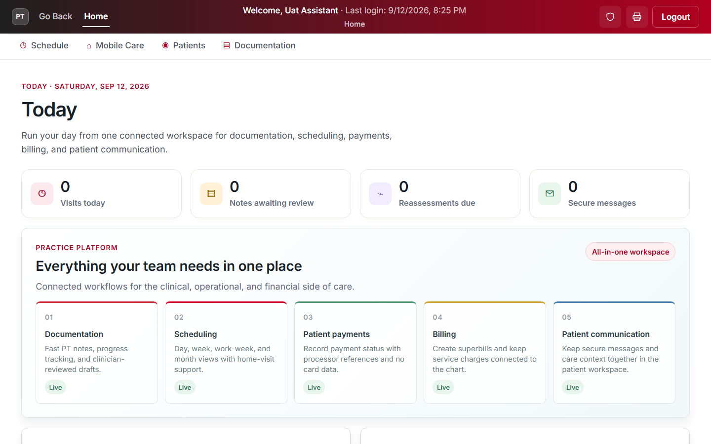
The PTA's home screen.
Expected resultA home screen appears with Patients, Documentation, Scheduling, and Mobile Care tiles.
PASSFAIL
If it failed, what happened?
TEST 10.2 — FRONT DESK HOME SCREEN & SCHEDULE
Who should test: Front Desk / Scheduler
START HERE:
- Log in as
frontdesk.uat@uat.test. - Click Scheduling.
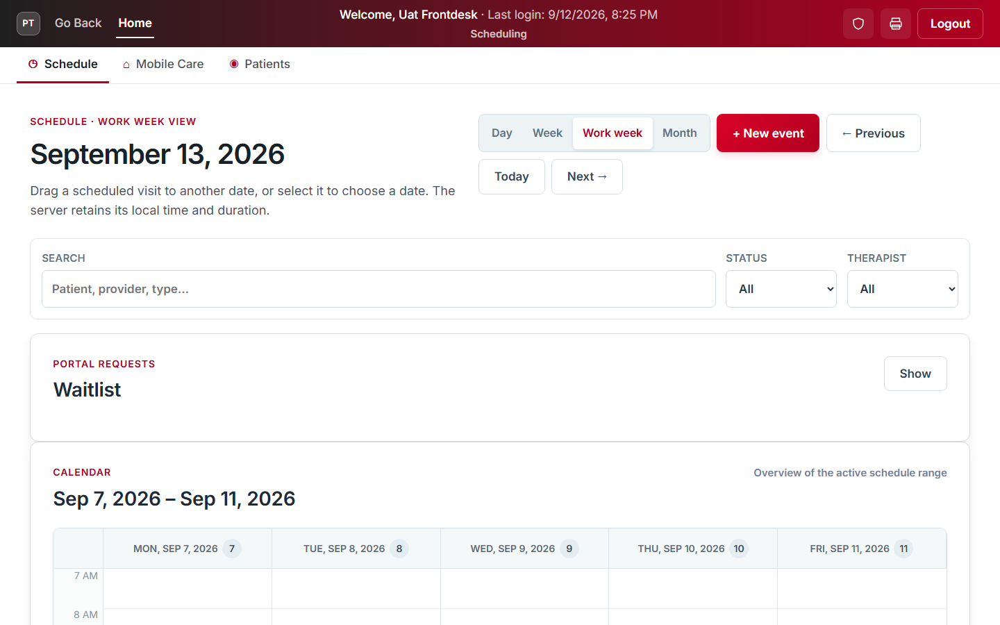
Front Desk's view of the Schedule.
Expected resultFront Desk can see and use the calendar just like Admin, but should NOT see Reports.
PASSFAIL
If it failed, what happened?
TEST 10.3 — BILLER HOME SCREEN
Who should test: Biller
START HERE:
- Log in as
billing.uat@uat.test.
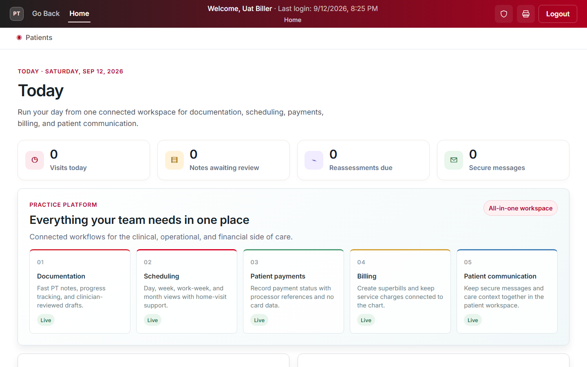
The Biller's home screen.
Expected resultA home screen appears focused on billing — the Biller should NOT see Documentation or Mobile Care tiles.
PASSFAIL
If it failed, what happened?
Section 11 — Platform / Super Admin
TEST 11.1 — SUPER ADMIN HOME DASHBOARD
Who should test: Super Admin
START HERE:
- Log in as
superadmin.uat@uat.test.
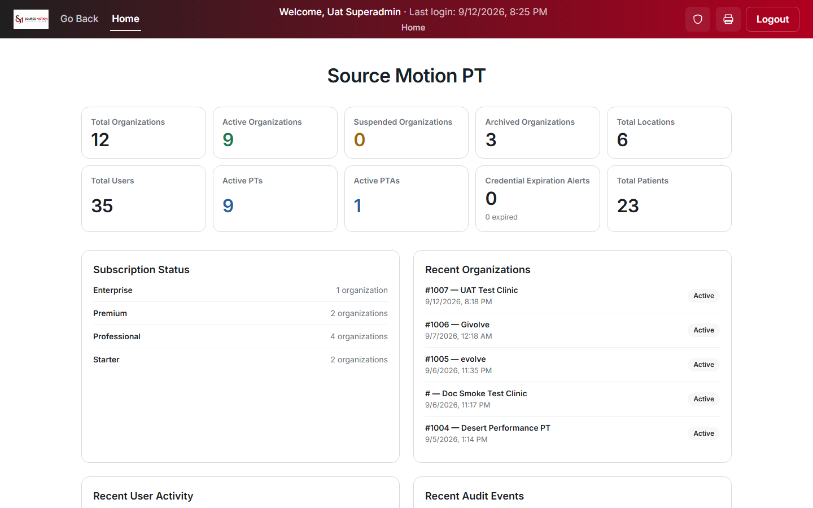
The platform-wide Super Admin dashboard.
Expected resultA platform-wide dashboard appears with counts of organizations, users, and patients across every clinic — not just one.
PASSFAIL
If it failed, what happened?
TEST 11.2 — ADMINISTRATION HUB
Who should test: Super Admin
START HERE:
- Click Administration.
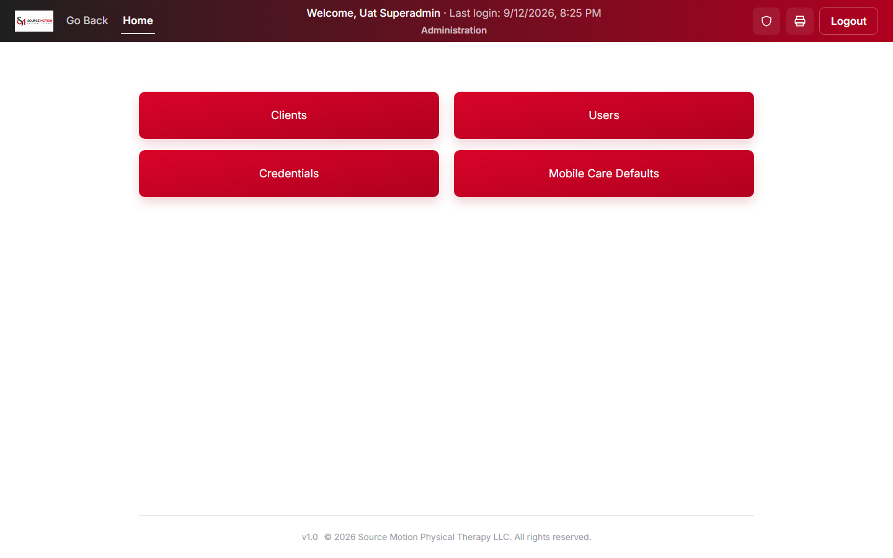
The Super Admin Administration hub.
Expected resultFour buttons appear: Clients, Users, Credentials, Mobile Care Defaults.
PASSFAIL
If it failed, what happened?
TEST 11.3 — CLIENT MANAGEMENT
Who should test: Super Admin
START HERE:
- Click Clients from the Administration hub.
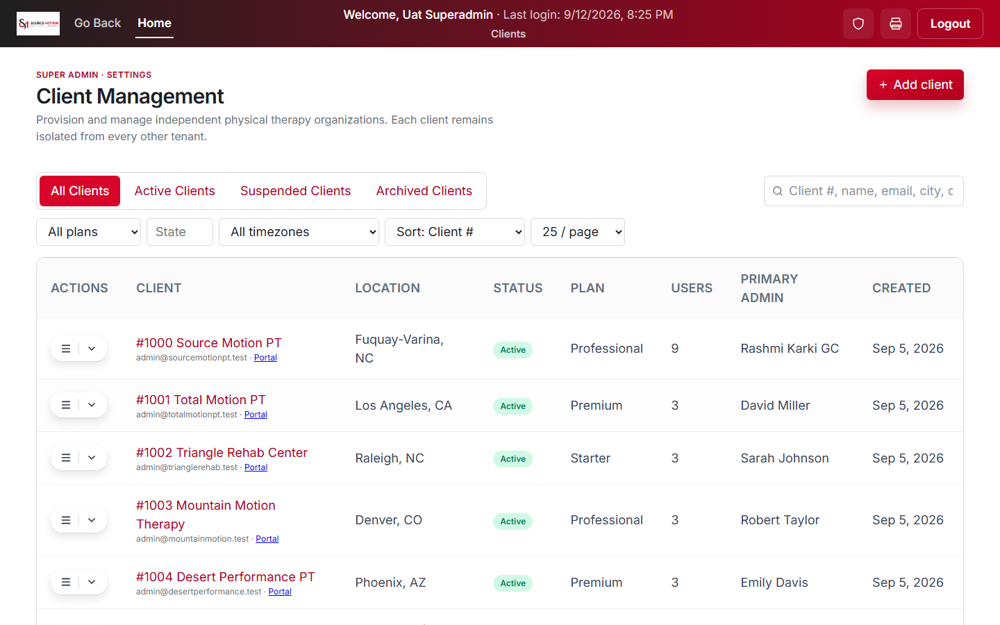
Client Management — every organization on the platform.
Expected resultA list of every clinic ("client") on the platform appears, each with its own client number, status, plan, and user count.
PASSFAIL
If it failed, what happened?
TEST 11.4 — CREDENTIAL DASHBOARD
Who should test: Super Admin
START HERE:
- Click Credentials from the Administration hub.
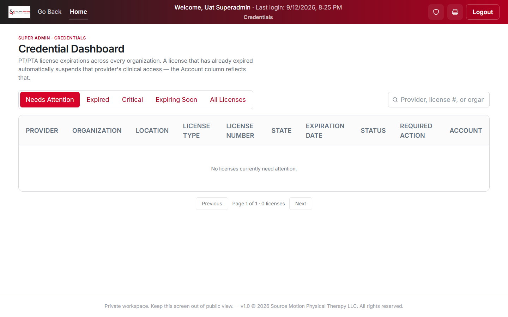
The platform-wide license/credential dashboard.
Expected resultA dashboard of clinician licenses appears across every clinic, with tabs for Needs Attention, Expired, Critical, Expiring Soon, and All Licenses.
PASSFAIL
If it failed, what happened?
Section 12 — Patient Portal
TEST 12.1 — PATIENT PORTAL HOME
Who should test: Patient
START HERE:
- Log in as
patient.uat@uat.test.
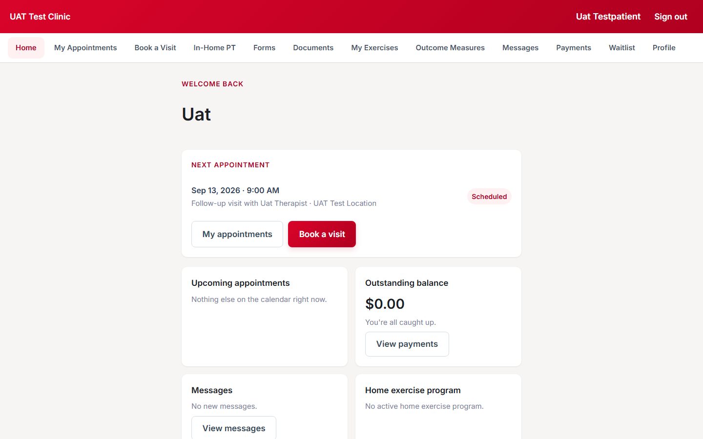
The Patient Portal home screen.
Expected resultA simple home screen appears showing the next appointment, balance, messages, and a home exercise program summary.
PASSFAIL
If it failed, what happened?
TEST 12.2 — MY APPOINTMENTS
Who should test: Patient
START HERE:
- Click My Appointments.
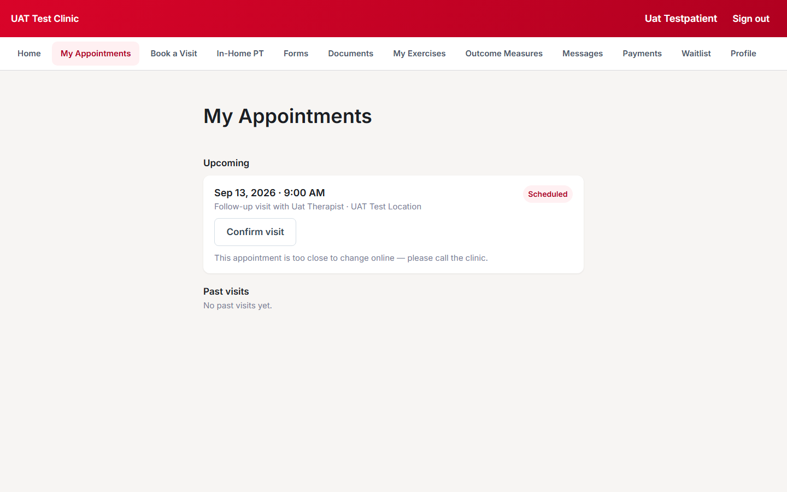
Patient Portal — My Appointments.
Expected resultThe test appointment (scheduled for tomorrow) appears, with Reschedule/Cancel buttons if it's far enough away in time.
PASSFAIL
If it failed, what happened?
TEST 12.3 — IN-HOME PT REQUEST STATUS
Who should test: Patient
START HERE:
- Click In-Home PT.
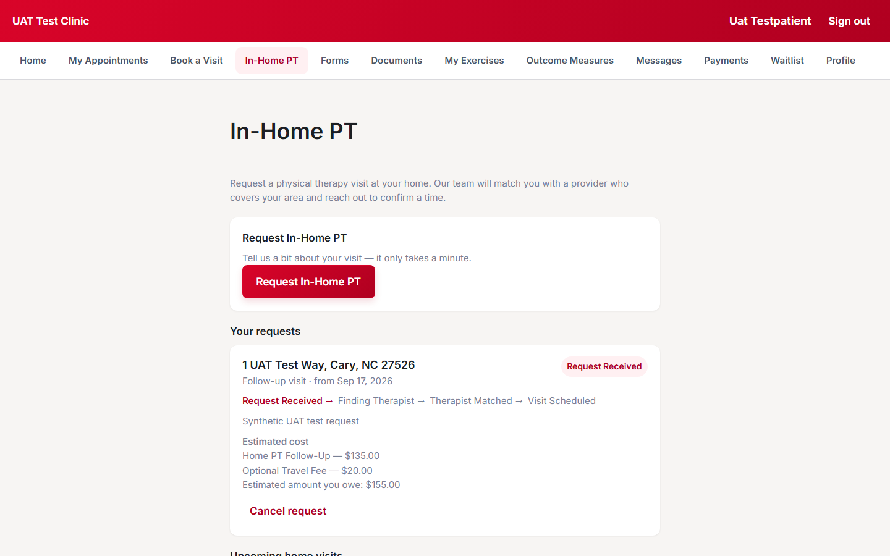
Patient Portal — In-Home PT request status.
Expected resultThe test Mobile Care request appears with a plain-language status like "Request Received" or "Finding Therapist" — never any internal matching scores.
PASSFAIL
If it failed, what happened?
TEST 12.4 — PROFILE
Who should test: Patient
START HERE:
- Click Profile.
- Change the phone number field, then click Submit changes for review.
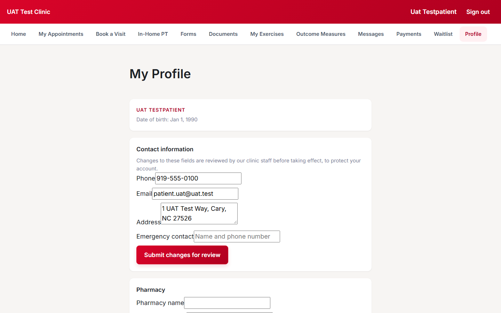
Patient Portal — Profile.
Expected resultA message says your change was submitted for staff review — the phone number does NOT change immediately on screen.
PASSFAIL
If it failed, what happened?
Section 13 — Two-Clinic Isolation Check
This is one of the most important checks in this entire guide — it confirms one clinic can never see another clinic's patients or data.
TEST 13.1 — CLINICS CANNOT SEE EACH OTHER'S PATIENTS
Who should test: Super Admin (or ask your platform administrator)
START HERE:
- Log in as
admin.uat@uat.test (UAT Test Clinic) and confirm you can see "Uat Testpatient" under Patients.
- Log out.
- Log in as an admin belonging to a different clinic (for example, one of the platform's other demo organizations).
- Search that clinic's Patients list for "Uat Testpatient."
Expected resultNothing is found. The other clinic cannot see "Uat Testpatient" at all.
PASSFAIL
If it failed, what happened?
Section 14 — Logging Out
TEST 14.1 — SIGN OUT
Who should test: Anyone
START HERE:
- Click Logout (top right of any screen).
- Try going back in your browser, or reloading the page.
Expected resultYou're returned to the Sign In screen and cannot see any app pages without logging in again.
PASSFAIL
If it failed, what happened?
Final Summary Sheet
Fill this in once you've gone through the whole guide.
| Section | Total tests | Passed | Failed |
|---|
| 1 — Login & Getting Started | 2 | | |
| 2 — Patients | 2 | | |
| 3 — Scheduling | 2 | | |
| 4 — Clinical Documentation | 2 | | |
| 5 — Mobile Care | 2 | | |
| 6 — Billing | 1 | | |
| 7 — Administration | 2 | | |
| 8 — Reports | 1 | | |
| 9 — Safety & Audit | 1 | | |
| 10 — Other Staff Roles | 3 | | |
| 11 — Platform / Super Admin | 4 | | |
| 12 — Patient Portal | 4 | | |
| 13 — Two-Clinic Isolation | 1 | | |
| 14 — Logging Out | 1 | | |
| TOTAL | 28 | | |
Hand this sheet, along with any comments written on failed tests, back to your development team so issues can be looked into. That's the whole process — no technical background required.
Tester Name:
Signature: Date: